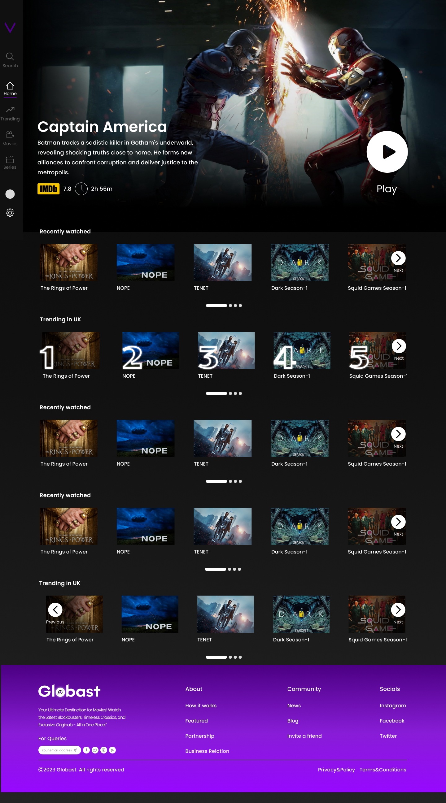
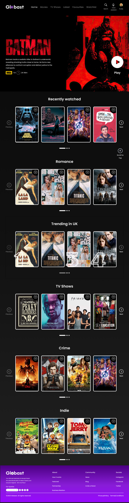

Home — Desktop

Discovery with lower friction
Featured-title banner with an immediate play action, followed by clearly grouped browsing rows.
An independent concept exploring an accessibility-first streaming platform for visually and hearing-impaired users. The redesign is built around a specific hypothesis: folding audio description, subtitle depth, and simplified navigation into the core flow — instead of burying them in settings — should cut task time and navigation errors substantially.
Visually impaired users struggle with discovery, navigation, and context. Audio description exists in some products, but often as a buried setting instead of a central access path.
Hearing-impaired users need more than generic captions. They need language control, clarity, readability, and reduced cognitive friction while switching content.
The real product goal was not “inclusive features.” It was enabling users to browse, choose, and watch on their own — without needing sighted or hearing support from others.
The intended research approach combines interviews, task-based usability testing, and prototype validation with users across visual and auditory accessibility needs. Two personas were synthesized from accessibility guidelines and existing research to anchor decisions without losing nuance.
Captured barriers around movie discovery, language access, and sensory friction.
Measured search, filter, play, subtitle, and accessibility-setting workflows.
Adjusted hierarchy, controls, and content cards based on observed hesitation and errors.
Composites synthesized from accessibility guidelines and published research, not individual interview subjects — used to anchor decisions without losing nuance.
Visual impairment · relies on screen readers daily
Goal: browse and choose something to watch without asking someone to read the screen first.
Frustration: audio description buried three menus deep, so he defaults to re-watching known titles rather than discovering new ones.
Needed: voice-first navigation, audio description promoted to a primary control, and enough context before playback to choose with confidence.
Hearing impairment · switches between two subtitle languages
Goal: follow dialogue and tone accurately without subtitles lagging or cutting off mid-sentence.
Frustration: caption settings that reset between titles, forcing the same setup every single session.
Needed: persistent subtitle-language memory, adjustable pacing, and captions treated as core UI, not an accessibility afterthought.
Illustrative targets based on the friction removed in each flow — not measured field results.
The redesign's top priority, based on the persona interviews it was built around.
What the simplified discovery flow is designed to achieve.
Real screens from the working Figma prototype — not mockups. Dark immersion and strong hierarchy carry the visual language; the two accessibility-relevant controls actually built so far are subtitle-language switching and a voice-assistant entry point.
For the full interactive flow, open the Figma prototype ↗.

Featured-title banner with an immediate play action, followed by clearly grouped browsing rows.

A dedicated voice-assistant icon sits in the primary header, next to search — a first step toward hands-free navigation, not yet the full voice-control system the concept targets.

The "Audio & Subtitle" control sits directly in the player bar. Shown here switched from English to Chinese — the one accessibility-relevant interaction fully working in the current build.
The Globast concept is built on that premise: when content discovery, playback, and adaptation controls are integrated into the core journey instead of buried in settings, confidence and completion should both improve. The figures below are the concept's design targets, not results from a fielded study.